Part II: Meet the market#
Exploratory Data Analysis
Source data: snapshot from May 02 2025
Meaningful findings:#
The Portuguese and european data landscape are dominated by Azure, which comes a little surprising to me since AWS and GCP have much higher global market shares (Why is that?)
Junior roles are very rare and sparsely occurring (which is not so surprising given that Data Engineering role is almost 50% of the job listings currently)
Most firms are system integrators/consulting firms and do not have their own products. That’s really shameful
There are still over 60% jobs as hybrid, meaning that the on site jobs are within 30-40%
Porto and Lisbon dominate the portuguese landscape with almost on pair of number of job openings. It makes me realize that although Lisbon has almost 3x the metro of Porto, Lisbon is not competitive for high skill jobs as probably its high costs of living and low wages hurt its technological competitiveness. On the other hand its surprising to see Porto as a technological hub of Portugal.
Mid level roles are looking for 2-4 years relevant experience in average while senior roles are more diverse but I would guess between 3-5 years experience. Note that
<class 'pandas.core.frame.DataFrame'>
RangeIndex: 2301 entries, 0 to 2300
Data columns (total 8 columns):
# Column Non-Null Count Dtype
--- ------ -------------- -----
0 job_summary 2301 non-null object
1 company_information 2301 non-null object
2 location_and_work_model 2301 non-null object
3 required_qualifications 2301 non-null object
4 preferred_qualifications 2301 non-null object
5 role_context 2301 non-null object
6 benefits 2301 non-null object
7 job_id 2301 non-null object
dtypes: object(8)
memory usage: 143.9+ KB
| job_summary | company_information | location_and_work_model | required_qualifications | preferred_qualifications | role_context | benefits | job_id | |
|---|---|---|---|---|---|---|---|---|
| 0 | {'role_title': 'DevOps Engineer', 'role_object... | {'company_type': 'Unspecified / Generic Tech',... | {'specification_level': 'Specific Location / R... | {'experience_years_min': '0', 'experience_year... | {'skills_keywords': [], 'other_notes': 'Not Sp... | {'collaboration_with': [], 'team_structure': '... | {'training_development': 'Not Specified', 'lea... | 4203796028 |
| 1 | {'role_title': 'Software Developer', 'role_obj... | {'company_type': 'Unspecified / Generic Tech',... | {'specification_level': 'Specific Location / R... | {'experience_years_min': '3', 'experience_year... | {'skills_keywords': [], 'other_notes': 'Intere... | {'collaboration_with': ['Network', 'Security',... | {'training_development': 'Support the resoluti... | 4209830737 |
| 2 | {'role_title': 'Machine Learning Engineer', 'r... | {'company_type': 'Unspecified / Generic Tech',... | {'specification_level': 'Specific Location / R... | {'experience_years_min': '8', 'experience_year... | {'skills_keywords': ['Vertex AI', 'dbt (Data B... | {'collaboration_with': ['cross-functional team... | {'training_development': 'Not Specified', 'lea... | 4194898848 |
| 3 | {'role_title': 'Machine Learning Engineer', 'r... | {'company_type': 'Unspecified / Generic Tech',... | {'specification_level': 'Specific Location / R... | {'experience_years_min': '8', 'experience_year... | {'skills_keywords': ['DBT', 'Vertex AI'], 'oth... | {'collaboration_with': ['cross-functional team... | {'training_development': 'Not Specified', 'lea... | 4194898848 |
| 4 | {'role_title': 'Machine Learning Engineer', 'r... | {'company_type': 'Unspecified / Generic Tech',... | {'specification_level': 'Specific Location / R... | {'experience_years_min': '8', 'experience_year... | {'skills_keywords': ['DBT', 'Vertex AI'], 'oth... | {'collaboration_with': ['cross-functional team... | {'training_development': 'Not Specified', 'lea... | 4194898848 |
Chapter I: Job Profile & Demographics#
Role Titles & Seniority
Distribution of Role Titles:
The distribution of role titles is heavily biased towards Data Engineering side (remember we are parsing Data Engineer OR Machine Learning Engineer OR Data Scientist roles). There doesn’t seem to be a lot of job opening for Data Science/ML, surprisingly.
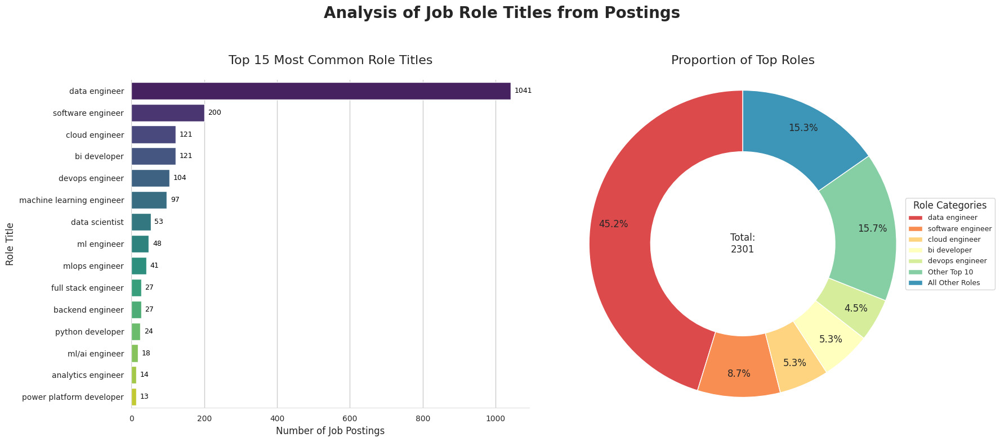
Key responsabilities per role specialization#
| job_summary | company_information | location_and_work_model | required_qualifications | preferred_qualifications | role_context | benefits | job_id | |
|---|---|---|---|---|---|---|---|---|
| 0 | {'role_title': 'DevOps Engineer', 'role_object... | {'company_type': 'Unspecified / Generic Tech',... | {'specification_level': 'Specific Location / R... | {'experience_years_min': '0', 'experience_year... | {'skills_keywords': [], 'other_notes': 'Not Sp... | {'collaboration_with': [], 'team_structure': '... | {'training_development': 'Not Specified', 'lea... | 4203796028 |
| 1 | {'role_title': 'Software Developer', 'role_obj... | {'company_type': 'Unspecified / Generic Tech',... | {'specification_level': 'Specific Location / R... | {'experience_years_min': '3', 'experience_year... | {'skills_keywords': [], 'other_notes': 'Intere... | {'collaboration_with': ['Network', 'Security',... | {'training_development': 'Support the resoluti... | 4209830737 |
| 2 | {'role_title': 'Machine Learning Engineer', 'r... | {'company_type': 'Unspecified / Generic Tech',... | {'specification_level': 'Specific Location / R... | {'experience_years_min': '8', 'experience_year... | {'skills_keywords': ['Vertex AI', 'dbt (Data B... | {'collaboration_with': ['cross-functional team... | {'training_development': 'Not Specified', 'lea... | 4194898848 |
| 3 | {'role_title': 'Machine Learning Engineer', 'r... | {'company_type': 'Unspecified / Generic Tech',... | {'specification_level': 'Specific Location / R... | {'experience_years_min': '8', 'experience_year... | {'skills_keywords': ['DBT', 'Vertex AI'], 'oth... | {'collaboration_with': ['cross-functional team... | {'training_development': 'Not Specified', 'lea... | 4194898848 |
| 4 | {'role_title': 'Machine Learning Engineer', 'r... | {'company_type': 'Unspecified / Generic Tech',... | {'specification_level': 'Specific Location / R... | {'experience_years_min': '8', 'experience_year... | {'skills_keywords': ['DBT', 'Vertex AI'], 'oth... | {'collaboration_with': ['cross-functional team... | {'training_development': 'Not Specified', 'lea... | 4194898848 |
| ... | ... | ... | ... | ... | ... | ... | ... | ... |
| 2296 | {'role_title': 'Software Engineer', 'role_obje... | {'company_type': 'AI / Data Science Focused', ... | {'specification_level': 'Specific Location / R... | {'experience_years_min': '0', 'experience_year... | {'skills_keywords': [], 'other_notes': 'None'} | {'collaboration_with': [], 'team_structure': '... | {'training_development': 'None', 'learning_pla... | 4204842868 |
| 2297 | {'role_title': 'Software Engineer', 'role_obje... | {'company_type': 'AI / Data Science Focused', ... | {'specification_level': 'Specific Location / R... | {'experience_years_min': '0', 'experience_year... | {'skills_keywords': [], 'other_notes': 'taxas ... | {'collaboration_with': [], 'team_structure': '... | {'training_development': 'string', 'learning_p... | 4204842827 |
| 2298 | {'role_title': 'Data Engineer', 'role_objectiv... | {'company_type': 'Banking / Financial Institut... | {'specification_level': 'Specific Location / R... | {'experience_years_min': '8', 'experience_year... | {'skills_keywords': ['Open-Source Contribution... | {'collaboration_with': [], 'team_structure': '... | {'training_development': 'Not Specified', 'lea... | 4214749312 |
| 2299 | {'role_title': 'Data Engineer', 'role_objectiv... | {'company_type': 'Banking / Financial Institut... | {'specification_level': 'Specific Location / R... | {'experience_years_min': '8', 'experience_year... | {'skills_keywords': ['Snowflake', 'Column-orie... | {'collaboration_with': [], 'team_structure': '... | {'training_development': 'Not Specified', 'lea... | 4214749312 |
| 2300 | {'role_title': 'Data Engineer', 'role_objectiv... | {'company_type': 'AI / Data Science Focused', ... | {'specification_level': 'Not Specified', 'remo... | {'experience_years_min': '3', 'experience_year... | {'skills_keywords': ['Azure Data Factory', 'Az... | {'collaboration_with': ['AI teams', 'product t... | {'training_development': 'Professional develop... | 4214189924 |
2301 rows × 8 columns
Top 3 roles selected: ['data engineer', 'software engineer', 'cloud engineer']
Key Responsibilities Breakdown for Top Job Roles
| Responsibility | Frequency |
|---|---|
| recommend ways to efficiently provide quality data and added value. | 22 |
| develop, maintain, and support data pipelines. | 22 |
| ensure architecture meets business requirements. | 20 |
| prioritize and manage multiple projects simultaneously, meeting deadlines and delivering high-quality results. | 18 |
| extraction of data from various sources, including databases, file systems, and apis | 17 |
| Responsibility | Frequency |
|---|---|
| avaliar e classificar os códigos gerados por modelos de ia. | 11 |
| criar e responder a perguntas relacionadas à ciência da computação para ajudar no treinamento de modelos de ia. | 11 |
| actively participate in code and design reviews to maintain exceptional quality and deepen your understanding of the system architecture and implementation | 11 |
| helping grow the team by participating in recruiting, mentoring and developing best practices | 10 |
| integrating third-party apis from exchanges, wallets, and infrastructure providers | 7 |
| Responsibility | Frequency |
|---|---|
| monitoring, troubleshooting, and optimizing aws infrastructure and services to ensure maximum performance and reliability. | 8 |
| developing and maintaining ci/cd pipelines using jenkins to streamline deployment processes. | 8 |
| automating infrastructure provisioning and configuration management using tools like ansible and terraform. | 8 |
| ensuring compliance with security best practices and helping implement robust access controls using iam, kms, and other aws security services. | 8 |
| creating and maintaining infrastructure as code (iac) with cloudformation or terraform to ensure consistent and reproducible deployments. | 8 |
Role objectives#
Top 3 roles selected for objectives analysis: ['data engineer', 'software engineer', 'cloud engineer']
--- Top 5 Role Objectives for: Data Engineer ---
| Objective | Frequency |
|---|---|
| this role is focused on designing, developing, and maintaining the data platform required for data storage, processing, orchestration, and analysis. | 22 |
| in this role, you will be instrumental in designing, building, and maintaining robust data infrastructures that support our clients' data-driven initiatives. | 11 |
| vamos reforçar a nossa área de data&ai, que tem suportado milhares de clientes na evolução/criação das suas plataformas de dados, analítica e ia | 11 |
| help them launch innovative digital products that interact with hundreds of millions of customers, transactions and data points. | 9 |
| utilise advanced data analytics to grow canonical's product adoption and market penetration | 9 |
--- Top 5 Role Objectives for: Software Engineer ---
| Objective | Frequency |
|---|---|
| building dremio parts and features which will power our ability to serve data as data products assisted by ai. | 4 |
| your role will contribute to shaping ai-powered customer experiences and enhancing the efficiency of our service platforms. | 4 |
| help build and maintain one of our most important internal systems - a platform responsible for orchestrating and automating the movement of assets across exchanges, wallets, and custodians such as binance, okx, fireblocks, kucoin, and coinbase | 4 |
| design, develop, and implement java-based applications for our automotive distribution and retail systems | 3 |
| expanding and enhancing our leading 'miles enterprise' solution. | 3 |
--- Top 5 Role Objectives for: Cloud Engineer ---
| Objective | Frequency |
|---|---|
| collaborating with development teams to design, implement, and optimize highly available, scalable, and secure cloud solutions on aws. | 9 |
| play a pivotal role in designing, implementing, and maintaining robust cloud solutions in aws | 7 |
| estamos a reforçar a nossa equipa para um projeto inovador e de grande impacto, onde terás a oportunidade de trabalhar num ambiente dinâmico, desafiante e tecnologicamente avançado. | 5 |
| integrar um projeto aliciante em lisboa. | 4 |
| desenvolver e otimizar pipelines de dados na aws | 3 |
Distribution of Role seniority#
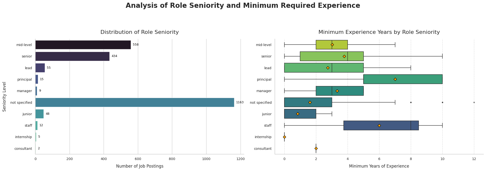
Summary of Minimum Experience Requirements
| Count | Mean | Q1 | Median | Q3 | |
|---|---|---|---|---|---|
| seniority | |||||
| mid-level | 558 | 3.0 | 2.0 | 3.0 | 4.0 |
| senior | 432 | 3.8 | 1.0 | 4.0 | 5.0 |
| lead | 55 | 2.7 | 0.0 | 3.0 | 5.0 |
| principal | 15 | 7.0 | 5.0 | 5.0 | 10.0 |
| manager | 9 | 3.3 | 2.0 | 3.0 | 5.0 |
| not specified | 1163 | 1.6 | 0.0 | 0.0 | 3.0 |
| junior | 48 | 0.8 | 0.0 | 0.0 | 2.0 |
| staff | 12 | 6.0 | 3.8 | 8.0 | 8.5 |
| internship | 5 | 0.0 | 0.0 | 0.0 | 0.0 |
| consultant | 2 | 2.0 | 2.0 | 2.0 | 2.0 |
Visa Sponsorship#
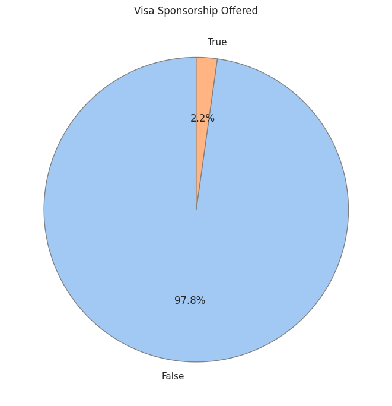
Company Insights#
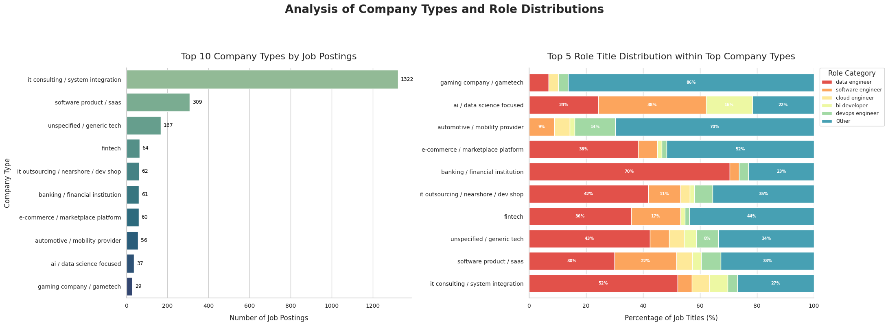
Top company values keywords#
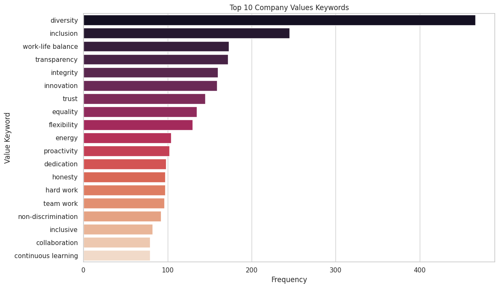
Remote Work#
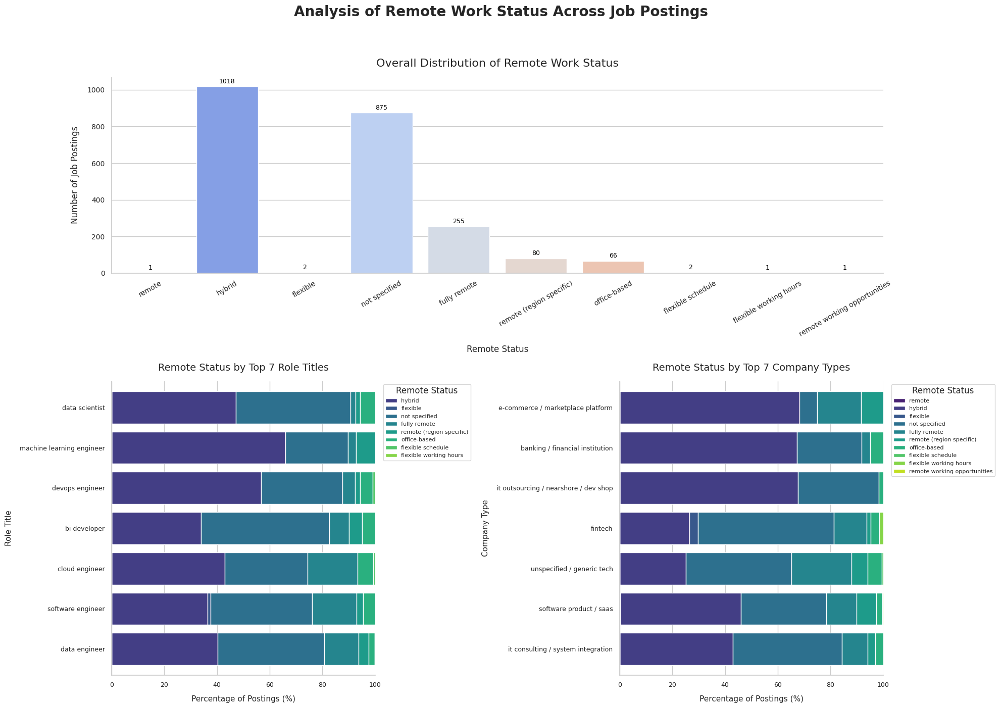
Top work locations#
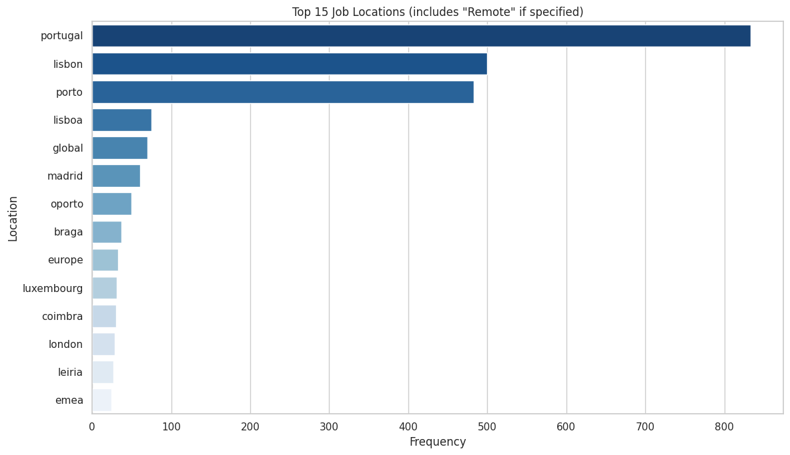
Job flexibility#
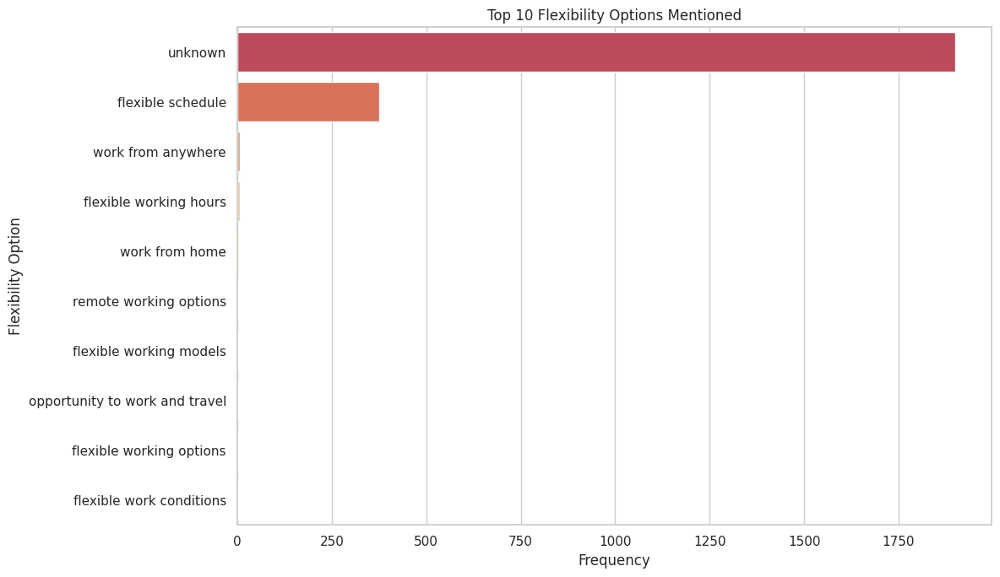
Chapter II: Qualifications Deep Dive#
Experience Levels
Distribution of Min. Years of Experience Required (Histogram):
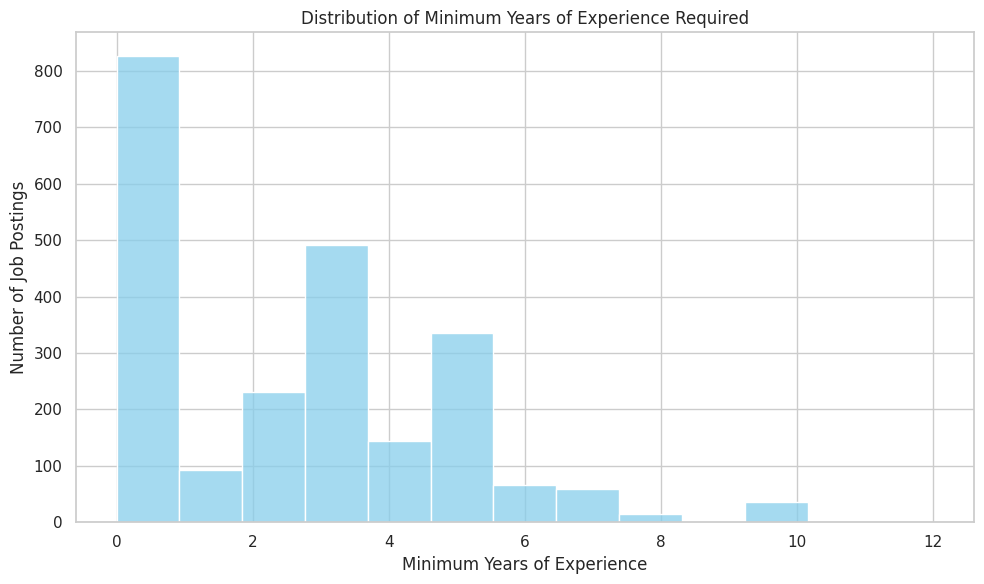
Min experience vs Role Seniority#
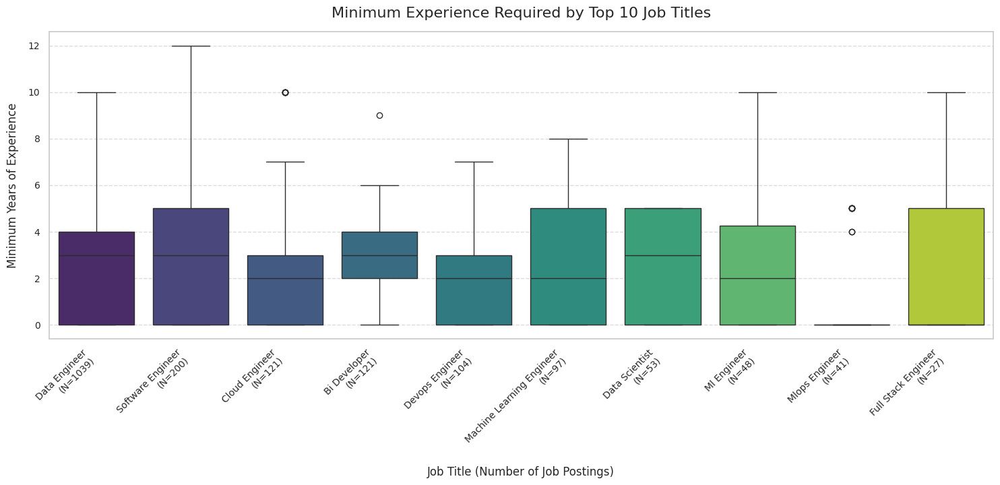
Technical Skills#
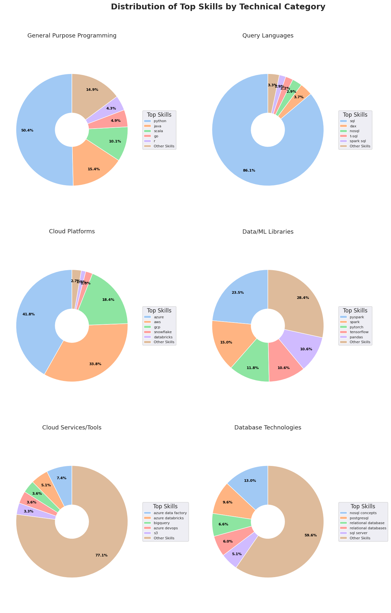
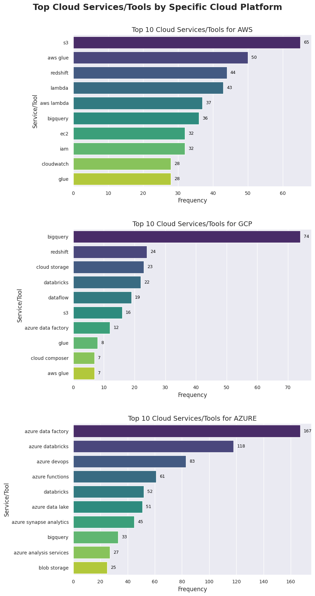
Soft skills#
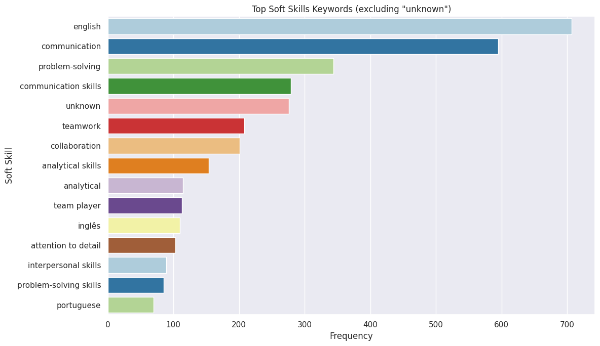
Chapter III: Role Context & Responsibilities#
Collaboration Patterns
Top Collaboration Teams/Entities:
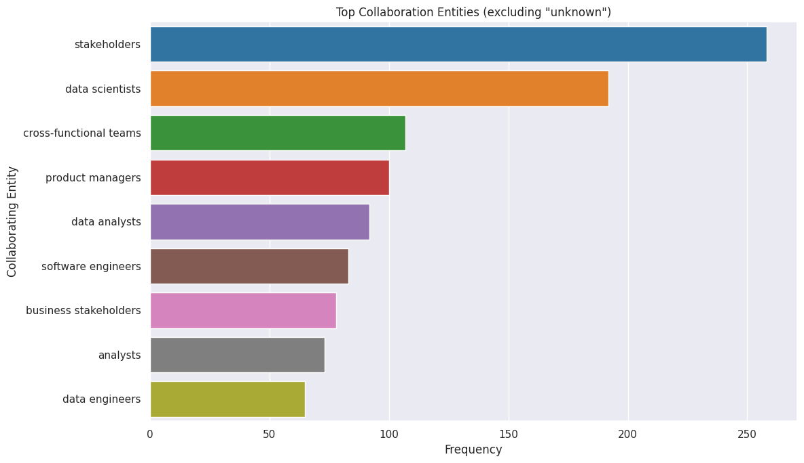
Chapter IV: Benefits & Perks#
Training & Development
Top Learning Platforms Mentioned:
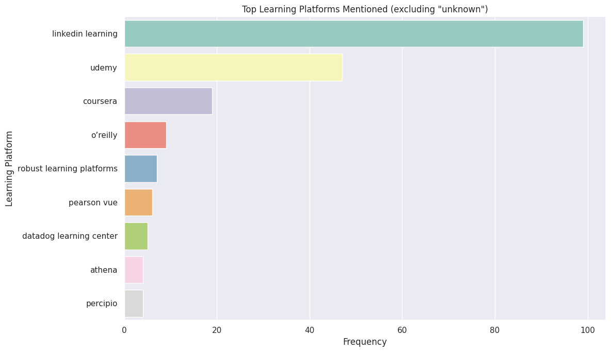
Other benefits#
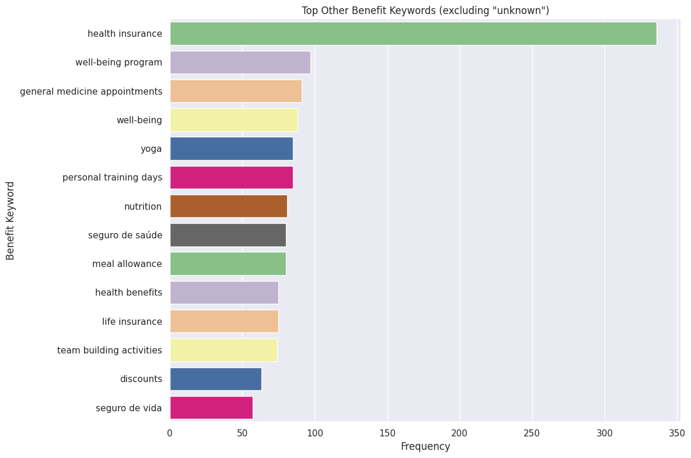